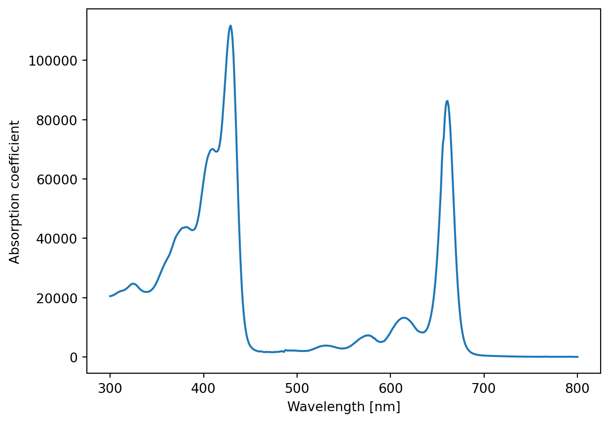

Code
try:
import fysisk_biokemi
print("Already installed")
except ImportError:
%pip install -q "fysisk_biokemi[colab] @ git+https://github.com/au-mbg/fysisk-biokemi.git#subdirectory=course-utils"We can use Jupyter notebooks as a calculator with all the operations we are familiar with from a regular calculator.
Use Jupyter notebook to calculate the following:
As also mentioned in “Introduction to the molecules of life”, it is often helpful to define quantities in variables, which gives them a name that can be used later. A variable is defined by using =, for example, we can define
This means that the result of the calculation is stored in a.
Repeat the calculations from exercise 1, but now save each result in a variable
We can then use the defined variables in a new calculation
In “Introduction to the molecules of life” we have made calculations about the number of cells in different parts of the body.
Use Jupyter as a calculator to calculate the percentage each category represents of the total number of cells in the body, i.e., for each category calculate
\[ P = \frac{\mathrm{Number}}{\mathrm{Total}} \times 100 \]
When we perform the same calculation multiple times, it’s smart not to have to write the same code again, it makes the code more readable and reduces the chance of making errors. The way to avoid this is by using functions, a function in Python defines a recipe that is executed when it is called.
Above, we have for example used the function print to write output. A function is defined like this
It’s important that the function is indented (pushed to the right) as Python needs this to read it. When a function is defined as above, the calculation is not performed, just like writing down a recipe doesn’t make a meal, only when the function is “called” is it executed
Complete the function below so it calculates the percentage of value out of total.
We can then use the function to calculate the percentages
We have now seen that we can use Jupyter notebooks as a calculator to make calculations with the basic arithmetic operations. However, we often need to calculate power functions, square roots, exponential functions or logarithms.
Fortunately, this is also easy with Python, as we can use a package that implements these operations as functions - specifically numpy.
Power functions, i.e., \(x^k\) can be calculated as
The other three can be calculated with NumPy as
np.sqrtnp.expnp.logUse numpy functions to calculate the following
Previously we looked at functions, we will build on that now. Remember that a function is a recipe that describes how a calculation should be performed that can be reused many times.
A function is defined with def followed by its name and its parameters (also called arguments) are placed in the parentheses.
The function is only executed when it is called, in this case for example
Where we now have the output of the function in the variable my_result.
The tables below show the radius of different cell types
| Cell type | Radius |
|---|---|
| Mycoplasma | ~0.2–0.3 µm |
| Typical bacterium | ~1–2 µm |
| Yeast cell (S. cerevisiae) | ~5–7 µm |
| Red blood cells (human) | ~7–8 µm |
| Lymphocyte (white blood cell) | ~8–10 µm |
| Typical animal cell | ~10–20 µm |
| Typical plant cell | ~20–100 µm |
| Human egg cell (oocyte) | ~120–140 µm |
| Neuron (cell body) | ~10–100 µm |
We have previously calculated the volume of the cells by assuming that they are spherical, whereby the volume is given by
\[ V(r) = \frac{4}{3}\pi r^3 \]
Write a function that takes radius r as an argument and calculates volume -
you can use np.pi instead of writing \(\pi\) yourself!
Call the function with some of the different radii from the table
We have previously seen some of the different data types in Python
intfloatstrBut there are many other types that can be helpful in different contexts. One such type is numpy arrays, an example of a numpy array is shown below
One of the smart things about arrays is that we can perform operations on all the content at once
The same is true for using the array A in a function, for example we can write
Create an array that contains the specified cell radii and use your volume function to calculate the volume of all cells at once
The cell below creates an array with 1000 numbers
Use np.max to find the largest number in array_with_numbers
Sometimes we are interested in specific entries in an array, so we also need to be able to extract data from an array. This is “indexing”, for example if we have an array
We can extract the fourth number like this
In Python we start counting from 0, so the fourth number is found at position 3.
Use indexing to calculate the sum of
In molecular biology we often work with spectra, where the axes are for example
Wavelength(nm) AdsorptionCoefficient
0 300 20487.000
1 301 20547.000
2 302 20642.000
3 303 20767.000
4 304 20899.000
.. ... ...
496 796 26.665
497 797 15.556
498 798 29.164
499 799 21.473
500 800 18.396
[501 rows x 2 columns]Text(0, 0.5, 'Absorption Coefficient')How the plotting works with be explained in another exercise, for now just appreciate the pretty plot.
We want to use NumPy to find what the maximum absorption coefficient is, and at which wavelength it occurs.
Start by finding the maximum absorption coefficient using np.max
We can use another function from NumPy to find the wavelength where the absorption coefficient has its maximum
np.argmax finds the index of the argument that contains the max value.
Now use index_max_abs to extract the corresponding wavelength from wavelengths
Later in the course we will see equations such as the quadratic binding equation
\[ \theta = \frac{K_D + [P_{tot}] + [L_{tot}]}{2[P_{tot}]} - \sqrt{\left(\frac{K_D + [P_{tot}] + [L_{tot}]}{2[P_{tot}]}\right)^2 - \frac{[L_{tot}]}{[P_{tot}]}}, \] which can be used to describe titration data that reports protein saturation as a function of total ligand concentration.
Calculating this function requires that we are careful with parentheses! Which we have all learned, but since it is very important in this context, it is worth refreshing.
For the following pairs of expressions, calculate both (by hand or mentally, according to preference.)
For the three calculations below, consider what the result is before you run the cell.
The cell below prints the result for each calculation
We want to calculate the expression
\[ \frac{a + b}{c + d} \]
Someone has implemented the function below, but it is incorrect - your task is to fix it.
The first term of the quadratic binding equation is
\[ \frac{K_D + [P_{tot}] + [L_{tot}]}{2[P_{tot}]} = \frac{a + b + c}{2 b} \]
Complete the function below so it calculates this expression
We have previously looked at a dataset about the absorption spectrum of chlorophyll, but we weren’t focused on how we handled this dataset.
What we achieved was plotting the dataset, as seen below
chloro_df = load_dataset("chlorophyll")
wavelengths = chloro_df['Wavelength(nm)'] # An array with 501 entries
absorption = chloro_df['AdsorptionCoefficient'] # An array with 501 entries
fig, ax = plt.subplots()
ax.plot(wavelengths, absorption)
ax.set_xlabel('Wavelength [nm]')
ax.set_ylabel('Absorption coefficient')Text(0, 0.5, 'Absorption coefficient')
This time we will investigate a bit more how we can work with a dataset.
It is important that we keep good track of our data, it is often smart to use a data type that helps us with this. We have previously seen arrays, which is one possibility - e.g.
But if we have many quantities it can quickly become unmanageable - another possibility is to store all our quantities in the same array
[1 2 3 4]
[ 1 4 9 16]NumPy arrays can have multiple dimensions, combined_array here has two dimensions (like a matrix). In this case each row describes one of our quantities. Here : is used to mean “all” in indexing so [0, :] can be read as first row all columns.
But then we need to keep track of which axis contains which quantity. Sometimes it can be fine to keep our data as np.array but other times it’s better in other ways.
DataFrameOne such other way to handle a dataset is by using a new type, namely a pandas DataFrame.
We can create a DataFrame from our two arrays like this;
a b
0 1 1
1 2 4
2 3 9
3 4 16Here we have three columns, the first is index, the second is a and the third is b.
The chlorophyll dataset was actually also a DataFrame.
With a DataFrame we have more possibilities for indexing, we can for example use the name of the column.
Calculate the formula \(2 \times a\) where \(a\) comes from the dataset above df
We can also add two arrays together using whats called an elementwise operation where for example the first element of each array are added, the second elements are added and so on.
Use this to calculate \(c = a + b\).
Make a plot of \(a\) versus \(b\) where the two quantities come from the DataFrame df.
You need to extract the two columns df['a'] and df['b'] and put those in ax.plot(..., ...).
Often we don’t want to write our dataset directly into code, but store them as separate files that could for example come from experimental equipment.
We can get data from an Excel file, like this
Through out the course we will use a widget to load datasets from your computer, this makes it a little easier to manage with Google Colab.
You can run the cell below and click on the “Upload”-button that appears and you use that to select the reverse_reaction.xlsx dataset that you can download from here datasets under the “Additional Datasets” tab at the bottom of the page.
You should save it somewhere where you can find it again - a good idea would be to put it in a folder specifically for this course.
Once you’ve uploaded the dataset you can run the next cell
Based on the information that has been printed out what do you think the dataset contains? Think about the following
Now that we have retrieved the dataset we want to investigate it more easily by plotting it.
Complete the code below
fig, ax = plt.subplots()
ax.plot(df['time'], ..., label='[A]') # Replace ... with your code
... # Replace ... with your code that plots time versus concentration_B
ax.set_ylabel('Concentration') # Sets name on y-axis
ax.set_xlabel('Time') # Sets name on x-axis
ax.legend()# Shows what 'label' each plotted curve has.What do you think the dataset shows?
As mentioned we can also do calculations with a dataset. Calculate \[ [T] = [A] + [B] \] And complete the plot in the cell below
concentration_T = ... # Replace ... with your code
fig, ax = plt.subplots()
ax.plot(..., ..., label='[T]', color='C2') # Replace both ... with your code.
# From before
ax.plot(df['time'], df['concentration_A'], label='[A]')
ax.plot(df['time'], df['concentration_B'], label='[B]')
ax.set_ylabel('Concentration') # Sets name on y-axis
ax.set_xlabel('Time') # Sets name on x-axis
ax.legend() # Shows what 'label' each plotted curve has.Why do you think it looks like it does?
---
title: Self-study
engine: jupyter
categories: []
format-links:
- text: "Open in Google Colab"
href: "https://colab.research.google.com/github/au-mbg/fysisk-biokemi/blob/built-notebooks/built_notebooks/student/self_study_1.ipynb"
icon: box-arrow-up-right
---
{{< include tidbits/_install_import.qmd >}}
---
{{< include self_study/calculations.qmd >}}
---
{{< include self_study/functions_arrays.qmd >}}
---
{{< include self_study/parentheses.qmd >}}
---
{{< include self_study/dataset.qmd >}}